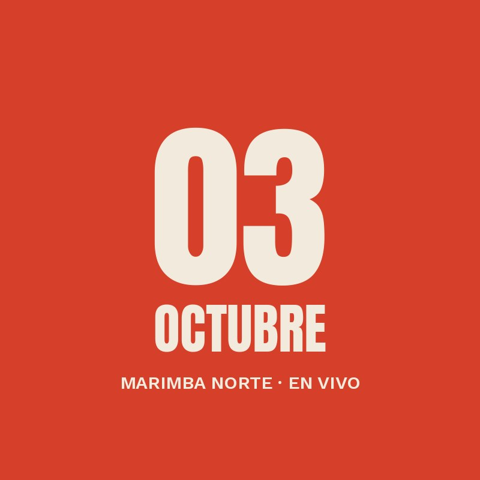

Próximo concierto
Marimba Norte en vivo
El cuarteto de Buenaventura trae su Pacífico eléctrico a Armenia: marimba, cununos y sintetizadores. Tocan el disco completo y después firman vinilos.
- Lugar
- Surco, primer piso
- Entrada
- Libre con consumo
- Cupo
- 60 personas
- Edad
- Todo público